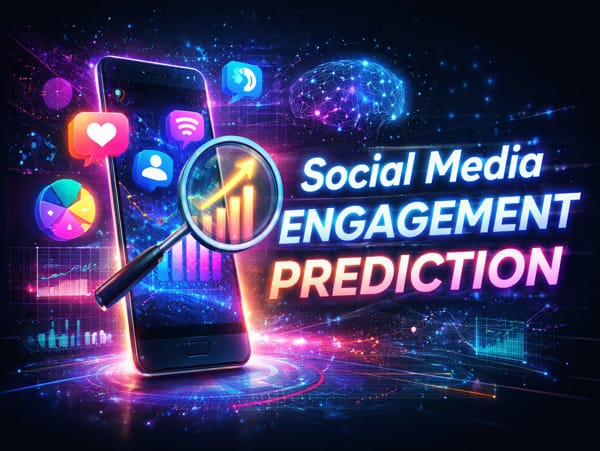
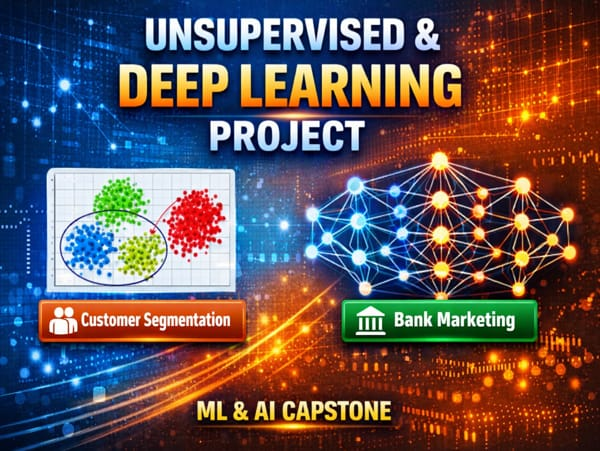
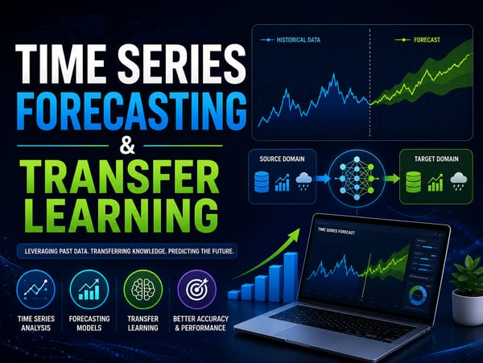

Smart Attendance System
Automated attendance tracking system using face recognition and computer vision — eliminating manual attendance processes in educational or corporate settings.

Pothole Detection App
Real-time pothole detection system using YOLOv8 deep learning and computer vision to identify road hazards — supporting infrastructure maintenance through automated visual inspection.

ASL Recognition Project
American Sign Language (ASL) hand gesture recognition system using Convolutional Neural Networks — enabling accessibility for the hearing-impaired through AI-powered sign detection.
Documents Scanner
Intelligent document scanning application using OpenCV for edge detection, perspective transformation, and image enhancement — producing clean, digitized document outputs.

Sales Data Analysis
In-depth exploratory data analysis and insight generation for retail sales datasets — uncovering trends, seasonality, and revenue drivers to support business decision-making.

Customer Churn Analysis
Predicting customer retention and identifying key churn risk factors using robust machine learning classification models — helping businesses proactively retain at-risk customers.

Employee Attrition Analysis
HR analytics project identifying the root drivers of employee turnover — analyzing satisfaction scores, tenure, and department metrics to optimize talent retention strategies.

Hospital Emergency Room Analysis
Operational data analysis for emergency room patient flows — evaluating wait times, bed utilization, and staffing bottlenecks to support hospital management efficiency.

Heart Disease Prediction
Cardiovascular risk prediction system built with supervised machine learning algorithms — trained on clinical diagnostic features to assist medical decision support.

Social Media Engagement Prediction
Predictive modeling pipeline estimating user interaction rates across social platforms — analyzing timing, content features, and audience demographics to optimize publishing strategy.

Healthcare Cost Prediction & Segmentation
Insurance claim forecasting and patient risk profiling using regression and clustering algorithms — helping health insurance providers accurately assess premium rates and risk pools.

Unsupervised ML & Deep Learning
Exploration of unsupervised representation learning techniques — combining clustering algorithms, PCA dimensionality reduction, and autoencoder architectures for unlabeled data analysis.
Deep Learning: CNN (Vision) & LSTM (NLP)
Advanced deep learning project implementing CNNs for image classification and LSTMs for natural language processing — demonstrating expertise in both Computer Vision and NLP architectures.

Time Series Forecasting & Transfer Learning
Applying transfer learning techniques to sequential time-series data — achieving accurate future predictions for temporal patterns in financial and operational datasets.

Full Stack AI Application
End-to-end AI application development demonstrating full-stack integration: ML models served through FastAPI and Flask backends, with an interactive Streamlit frontend — a complete production-ready AI system.

AI Ads Maker
AI-powered application designed to automate and generate creative marketing advertisements, enhancing content creation speed and efficiency.

Job Analyzer
An intelligent Generative AI tool to analyze job descriptions and match them with resumes, providing similarity scores and keyword extraction.

Social Media Content Rewriter
A smart tool leveraging advanced language models to repurpose, optimize, and rewrite text for various social media platforms to maximize engagement.